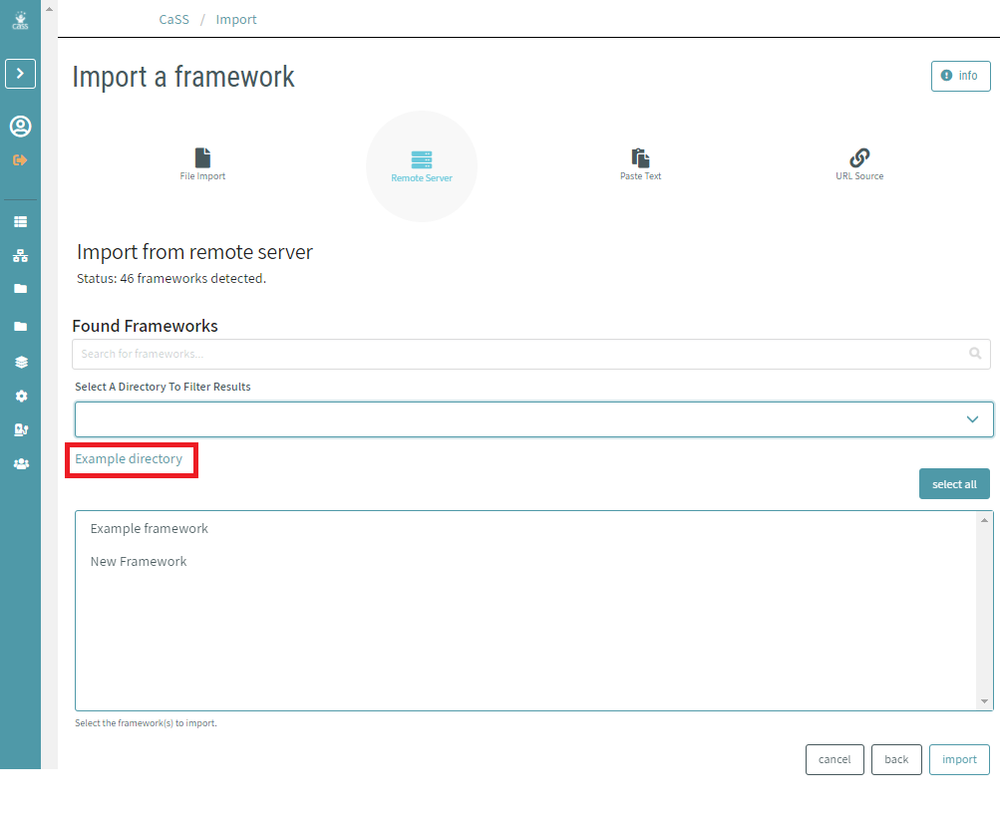
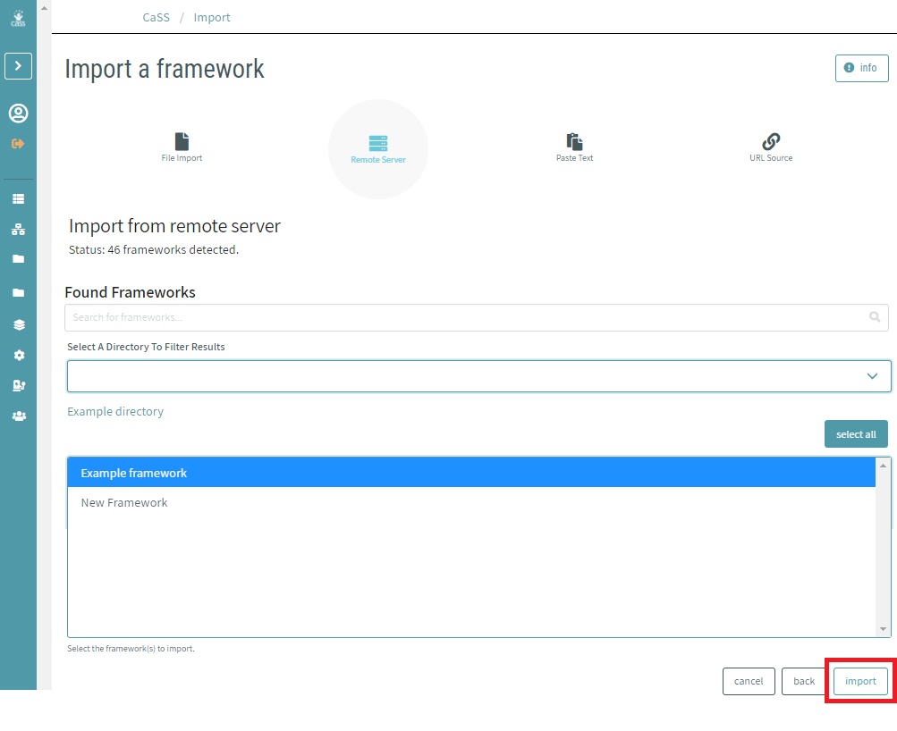

# Importing a Competency Framework
The process of Importing a new framework is also relatively simple. From the frameworks tab on the sidebar, users have the ability to view all existing frameworks within the system. At the top of the page is a list of options which allow users to import new frameworks into the database of existing frameworks.

After clicking the import framework button users will be prompted with a new page where they have the ability to select the source of the frameworks they are trying to import. Options include: file import, remote server, paste text and URL source.
All import types have instructions and guidelines in the panel on the right side of the screen.
# Importing From a File
To import a framwork from a file, click on "File Import". Select the desired source and drag the framework into the dotted window displayed below. You can upload csv, json, and xml files in specific formats. Html, pdf, and docx formats are also experimentally supported. Example files and templates are linked from the panel on the right side of the screen.

Once imported users can select the process files button and the desired framework will be imported into the your CaSS Authoring Tool database.
# Importing From an Existing CaSS Repository
To import a framework from a CaSS respository, click on "Remote Server". Set the input for "Paste URL Endpoint Of Server" to the CaSS endpoint with the framework(s) you would like to import. Click on "connect to cass endpoint".
To search for frameworks within the CaSS repository, enter a search term in the "Search for frameworks..." field. Leave this field blank to return all frameworks within the set filters below.
To search all frameworks within the CaSS repository, click on the dropdown list under "Select A Directory To Filter Results" and select "All frameworks".
If the CaSS repository you are importing from contains directories, then you can import frameworks located within a directory. To view the frameworks within a specific directory, click on the dropdown list under "Select A Directory To Filter Results" and select the desired directory. You will then see a list of frameworks (if any) in the directory.
When you select a directory to view the contents of, the directory name will show above the list of frameworks within it AND the list of directories to filter by will be updated to reflect any subdirectories located within that directory.
To navigate back to the parent directory, click on the Back button in the bottom right corner.

You can select one or more individual frameworks to import by clicking on each framwork name. When you have selected the frameworks that you would like to import, click "import".

# Importing From an IMS CASE Repositories
To import from IMS CASE repositories, click on "Remote Server". Set the input for "Paste URL Endpoint Of Server" to the IMS CASE endpoint with the framework(s) you would like to import. Click on "connect to case endpoint".
# Importing From CTDL-ASN JSON-LD Graphs
To import from links to CTDL-ASN JSON-LD graphs, click on "URL Source". Set the input for "Paste URL Document Of Document" to the link to CTDL-ASN JSON-LD graphs. Click on "import framework".
# Importing From Text
Click on "Paste Text" to input lists of competency names.
Copy and paste from a document or start typing in the text area.
Enter the name of the framework.
List each competency on a separate line. One space indicates one level of indentation in the hierarchy.
To the right of the text box, you will see a preview of the hierarchy you are creating. You can make any needed adjustments before importing. Once you are done, click "import" to complete the immport process and view the framework in the editor.